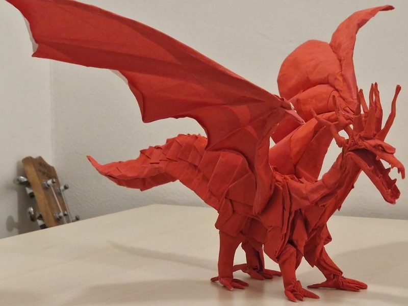
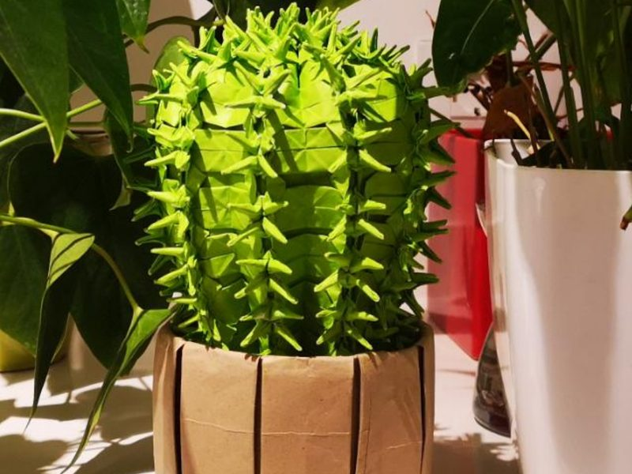
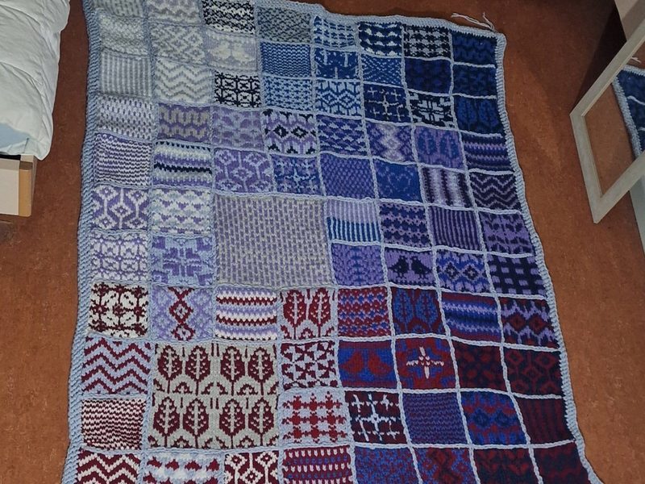
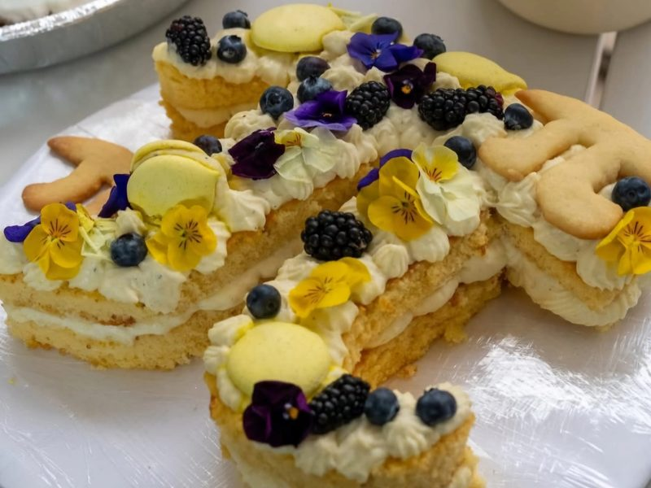
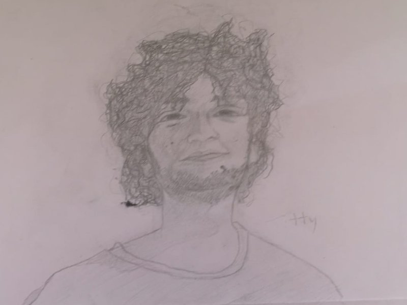
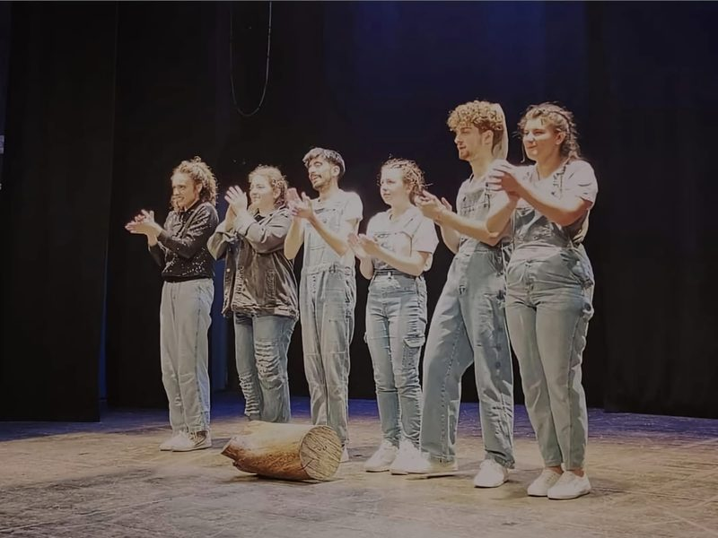

Other passions
Anything creative, really. I love to build things (if I don't for more than one week, I swear my hands will break).

Origami · Ancient Dragon 2.0 (S. Kamiya), 100 × 100 cm sheet, no cuts

Origami · Cactus (R. J. Lang), bicolor sheet

Knitting · Peace by Piece blanket, color-coded and knitted by me

Pastry and cooking · Cream tart for the department's Pi-cake contest

Drawing and painting · Pencil portraits

Theatre · On stage: "Best Play" at the Talè talè Talìa national festival, Enna. 8 years of drama, one as a working actress
Also: crochet, watercolours, singing, karate (black belt), figure skating and running.
See the full portfolio